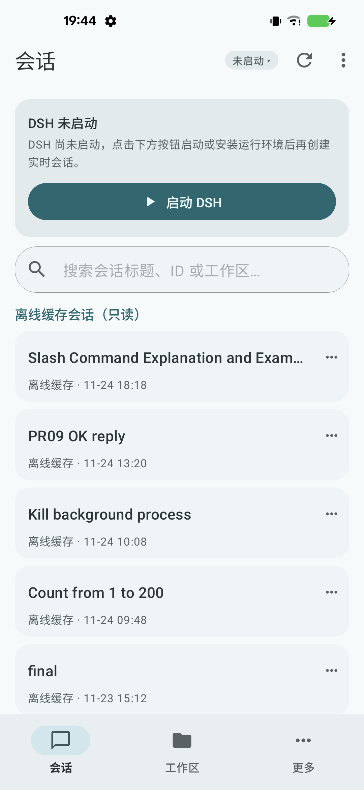
关闭 TextInputLayout 浮动标签后占位符居 Pill 中心、无边框裁切。
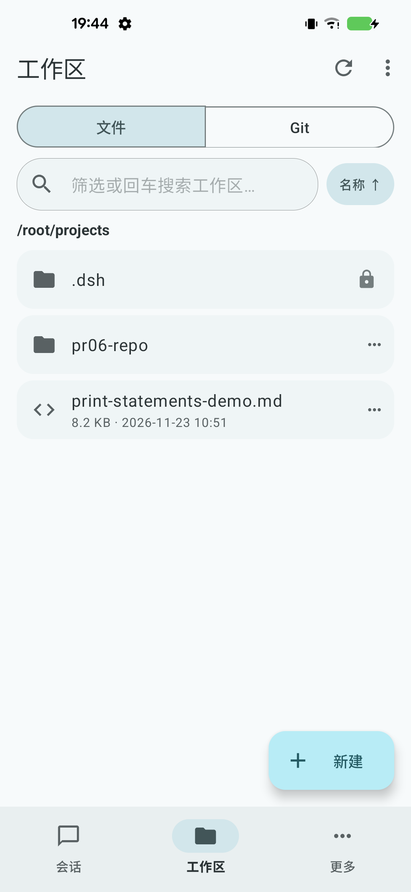
单行顶栏、文件/Git 分段切换、搜索胶囊与排序钮、XML 行卡(.dsh 锁标)、拇指区 + 新建 FAB。
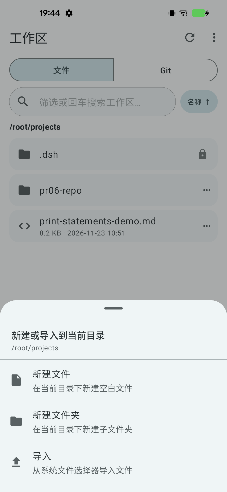
由 + 新建 FAB 拉起：新建文件 / 新建文件夹 / 从系统文件选择器导入。
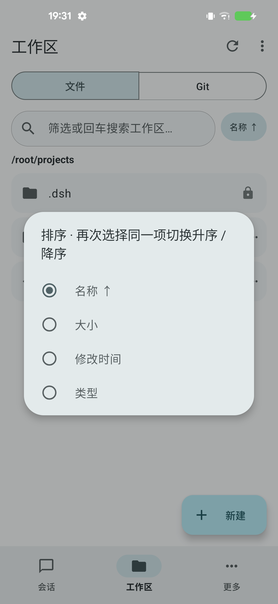
名称 ↑ / 大小 / 修改时间 / 类型 单选列表及升/降序切换提示。
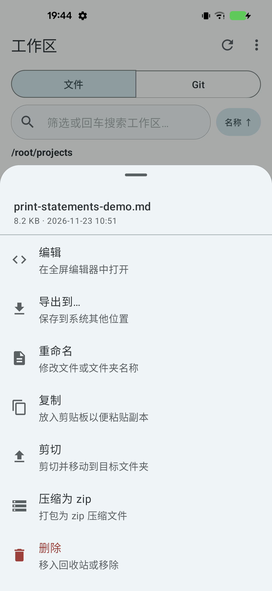
点击行尾 ⋮ 展开能力门控抽屉（编辑/导出/重命名/复制/剪切/压缩 zip/error 红删除）。
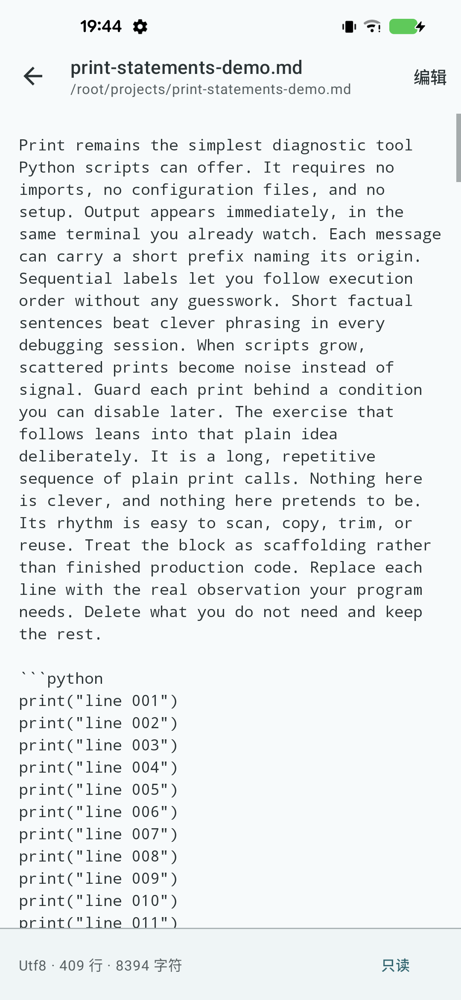
单击 .md 直进只读阅读视图，顶栏显示「编辑」，底栏展示编码/行数与「只读」。
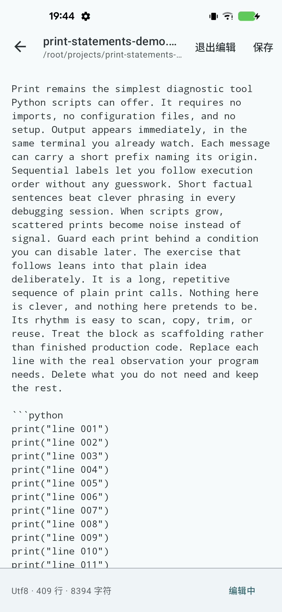
切换后顶栏为「退出编辑 | 保存」，底栏状态徽章清晰标示「编辑中」。
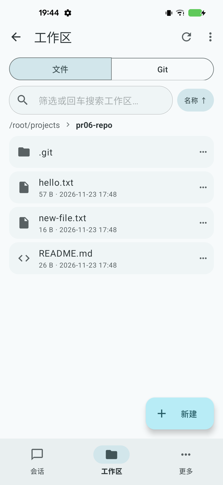
pr06-repo 目录与 item_file_crumb.xml（末级高对比加粗不可误点）。
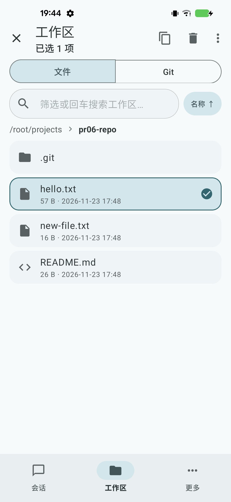
顶栏切换为选择批处理菜单（复制/剪切/压缩/删除），选中卡主色边框+勾选徽标。
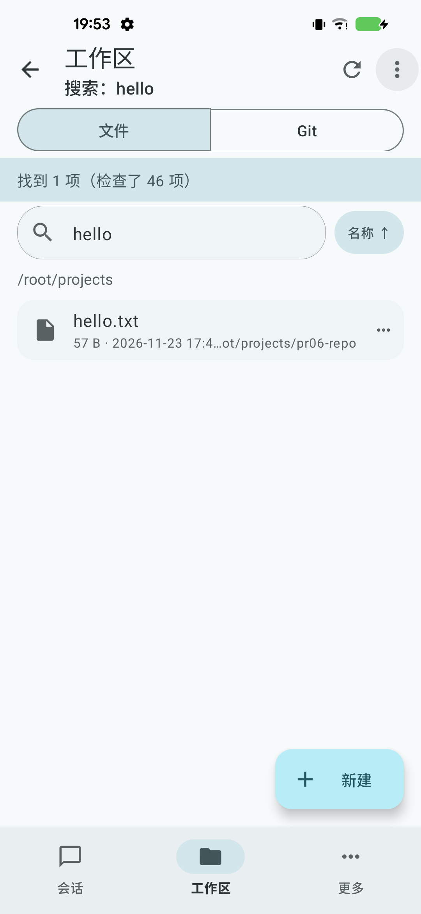
输入 hello 并回车直接触发 FileListing.Search，命中 pr06-repo/hello.txt 并显示命中统计。
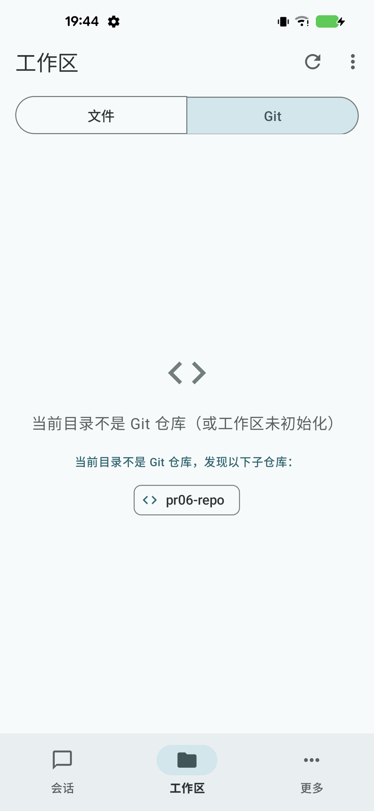
隐藏无效分支条，自动扫描一级子目录呈现 pr06-repo Chip；顶栏与刷新键零像素漂移。
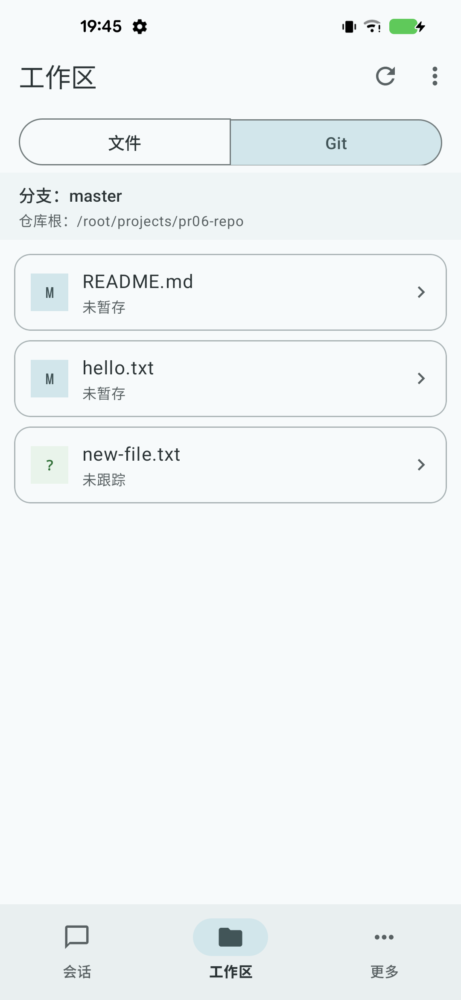
一键跳转 pr06-repo：展示分支 master、仓库根与 M/U 变更清单。
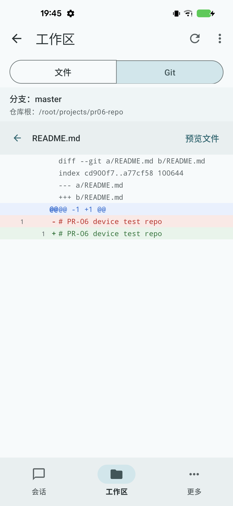
展示 hunk 头、行号与红绿差异背景，顶栏支持「预览文件」直达全屏编辑器。
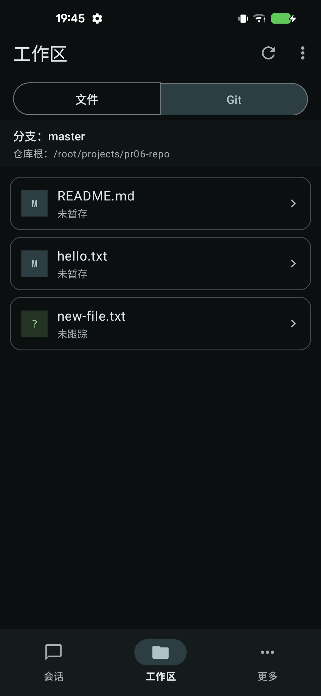
OLED 深色主题下卡片描边与状态徽章对比分明。
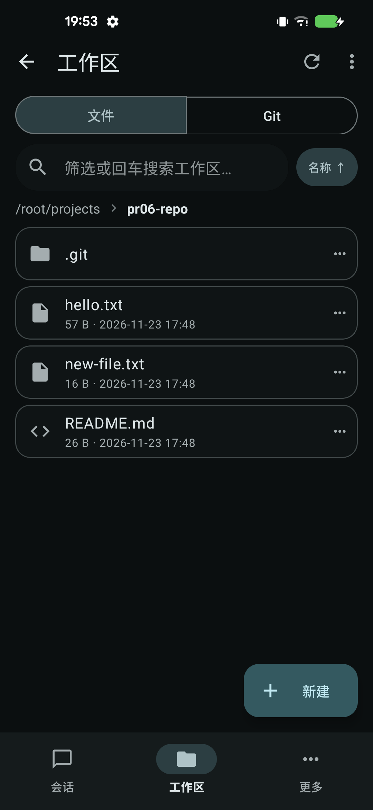
深色模式下末级面包屑 pr06-repo 加粗白字与父级弱化区分明显。
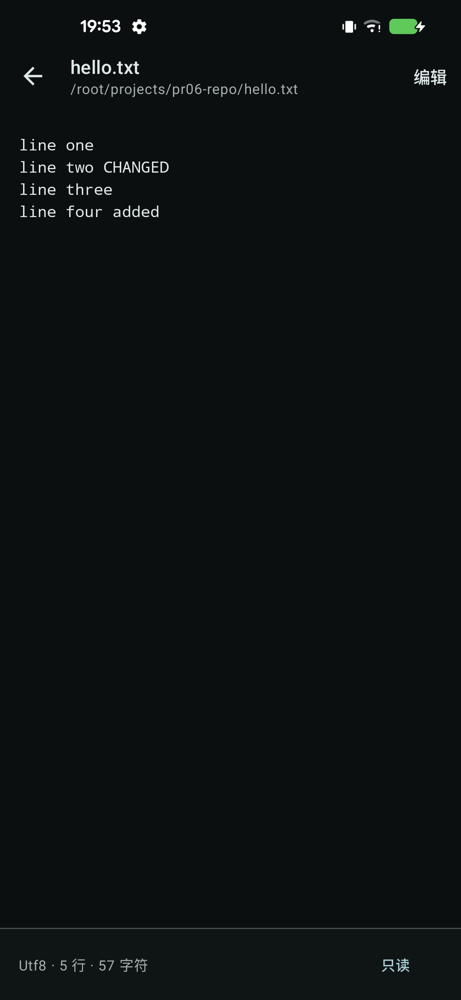
深色背景下等宽文本与底部状态条清晰可读。